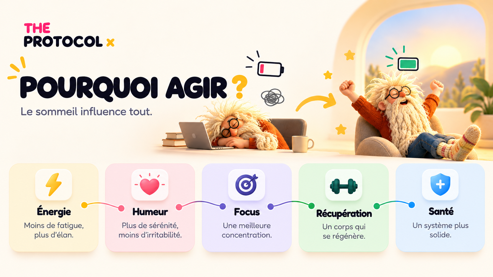
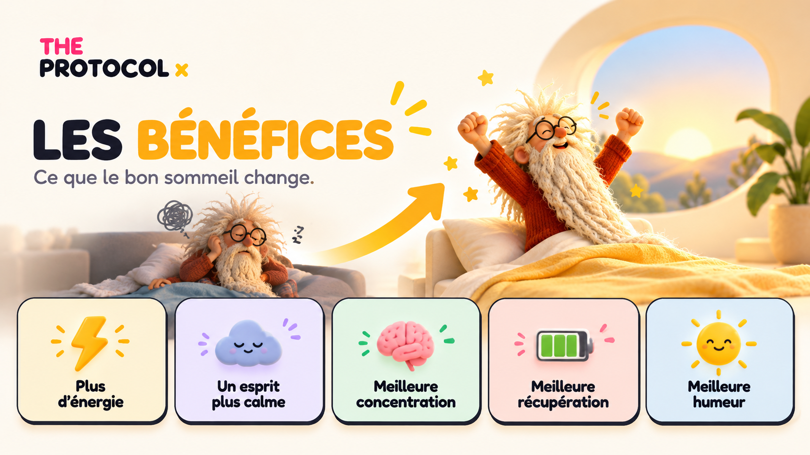
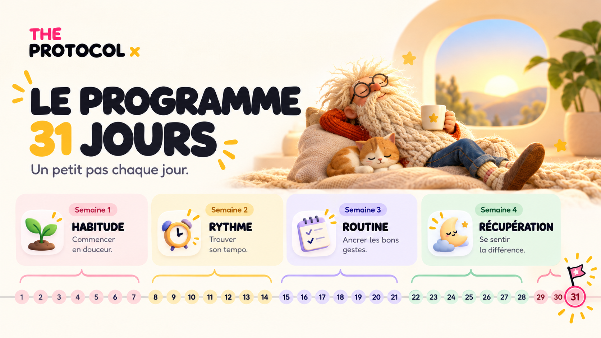

UNE AUTRE FAÇON D’EXPLORER
Sommeil BIS Version
Et si tu commençais par comprendre tes nuits ?
01 · COMPRENDRE
Pourquoi mes nuits ne se ressemblent-elles pas ?
Commence par repérer ce qui te parle dans ces situations.
Fatigue
À quel moment te sens-tu fatigué ? Note ce que tu ressens et comment ta nuit s’est passée.
Noter dans mon journalRéveils nocturnes
Note les réveils dont tu te souviens et ton ressenti au matin.
Noter dans mon journalEsprit agité
Quelles pensées reviennent le soir ? Tu peux les déposer dans ton journal.
Noter dans mon journalConcentration
Quelle tâche te semble difficile aujourd’hui ? Décris-la sans te juger.
Noter dans mon journalMatins difficiles
Comment s’est passé ton réveil ? Observe ce qui change d’un matin à l’autre.
Noter dans mon journalHumeur fragile
Mets quelques mots sur ton humeur aujourd’hui pour garder un repère.
Noter dans mon journal02 · DONNER DU SENS
Une nuit fait partie de toute ta journée.
Énergie, humeur, attention : explore les liens présentés dans ce visuel.

03 · TON POINT DE DÉPART
Un ressenti. Un premier pas.
04 · LES SOLUTIONS
Choisis un outil, commence simplement.
Ouvre le guide, une pause respiration ou ton journal.
Sleep Saver : un parcours calme dédié aux réveils nocturnes.
05 · OBSERVER
Qu’est-ce qui change pour toi ?
Garde une trace de ton énergie, de ton humeur et de ton ressenti au fil du parcours.

06 · INSTALLER LE RENDEZ-VOUS
31 jours, à ton rythme.

07 · À TOI DE JOUER
Par quoi veux-tu commencer ?
08 · SHOPPING
Pour accompagner ton parcours.
Retrouve les sélections et supports de l’univers Sommeil.
La sélection Sommeil
Explorer l’espace shop du domaine.
Découvrir ↗Le calendrier
Découvrir le support pour ton quotidien.
Découvrir ↗Le catalogue
Voir les articles de démonstration.
Découvrir ↗Catalogue de démonstration : aucun paiement sur ce site.
← Retour à l’accueil